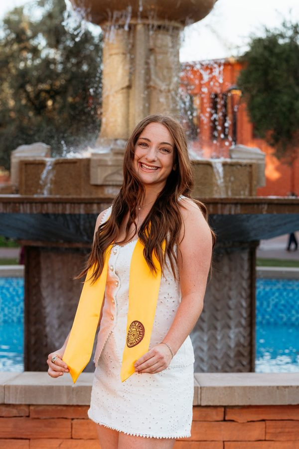
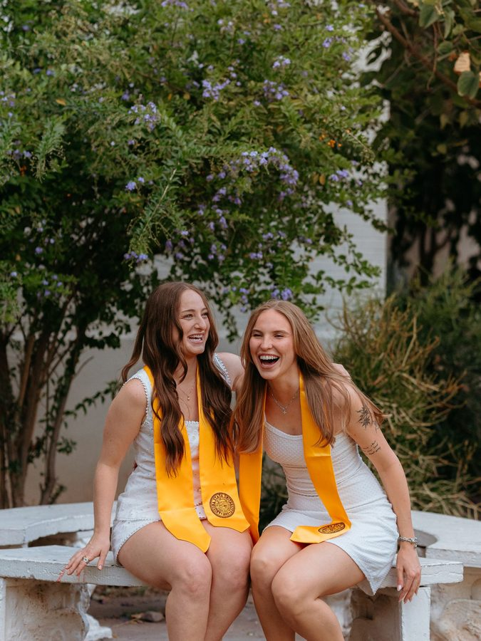
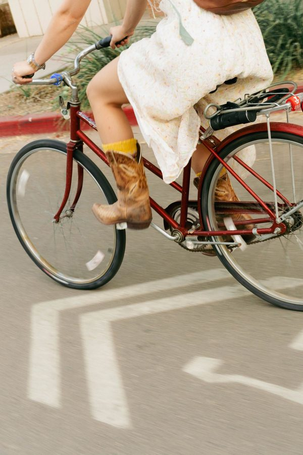

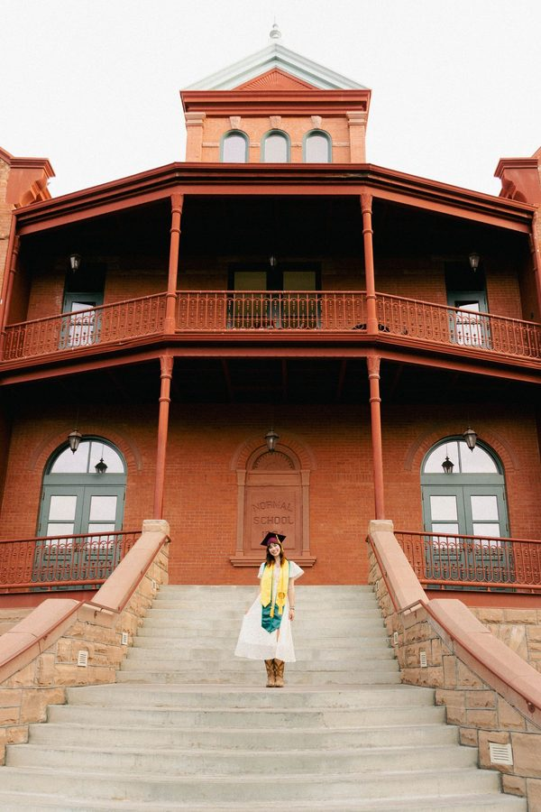
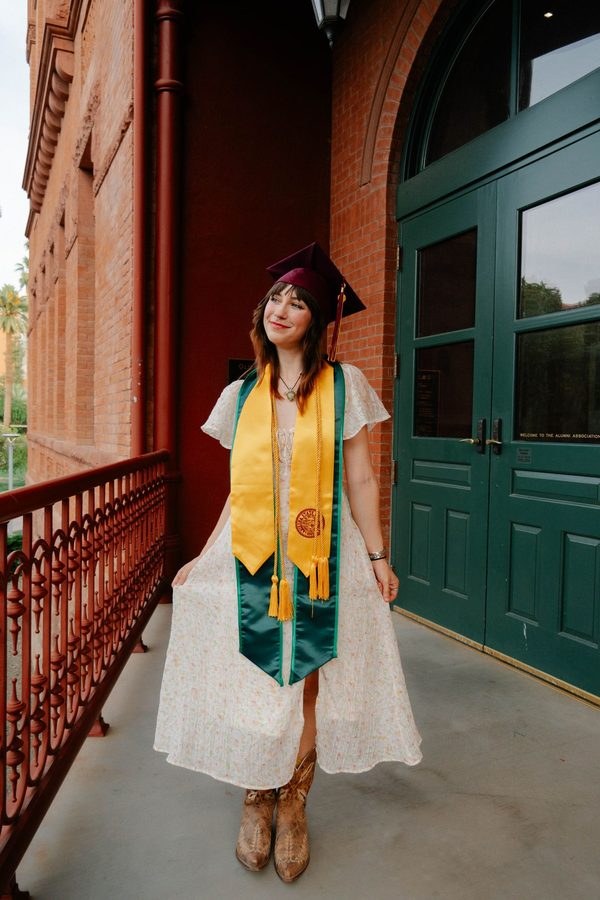
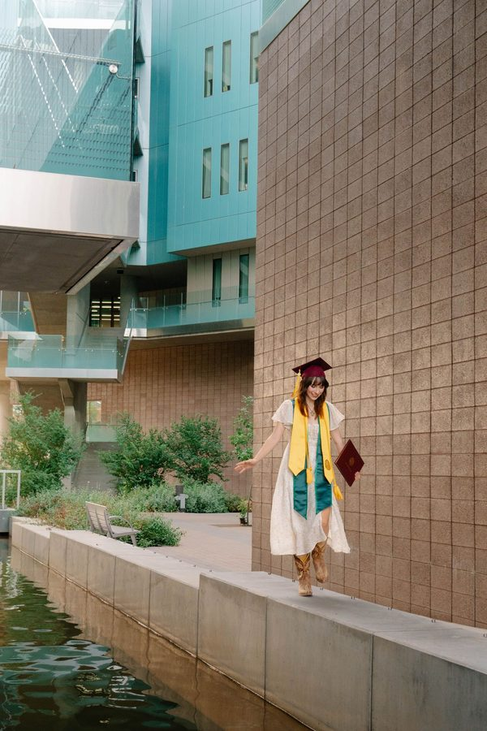
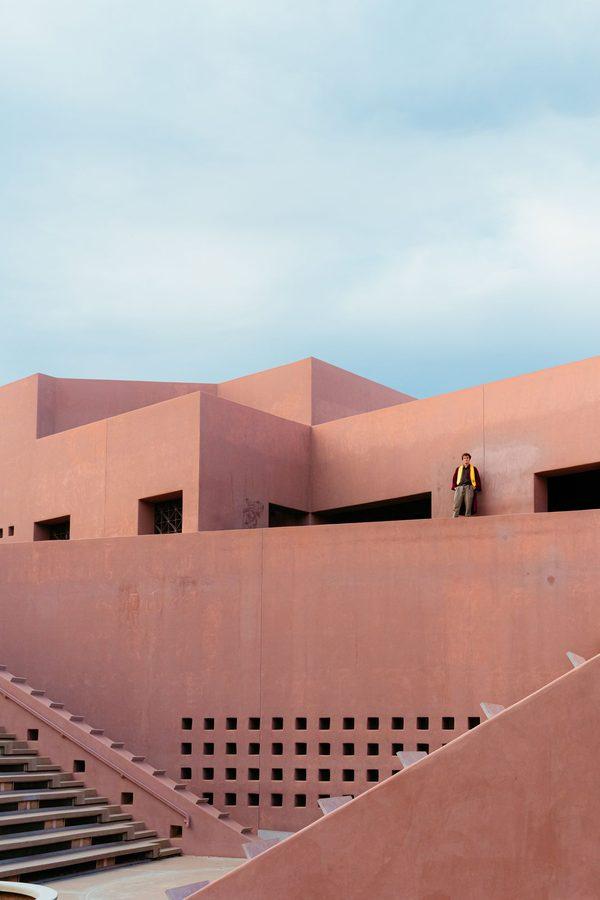

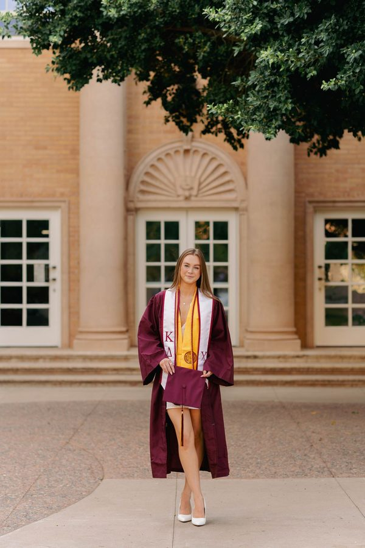
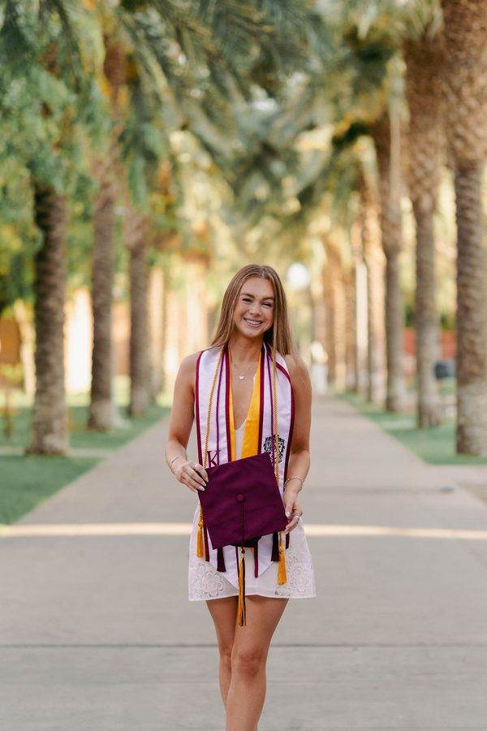
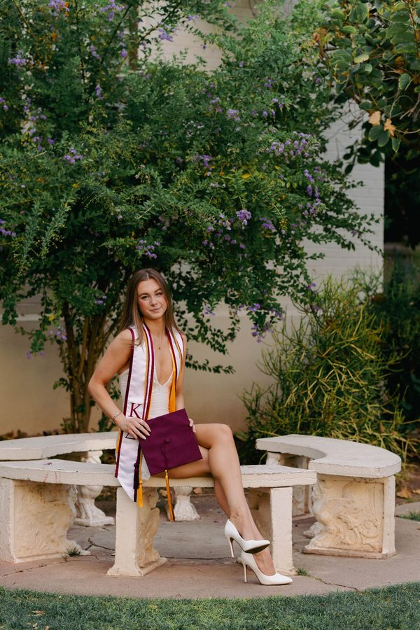
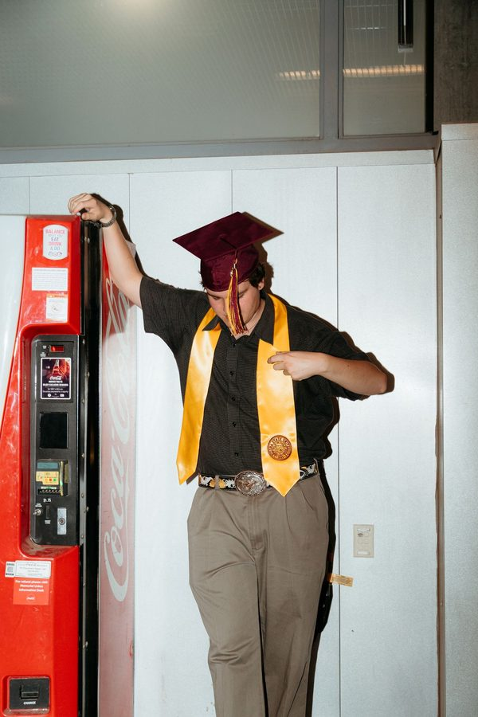
Portraits











Pricing
$175
One-hour shoot, 40 to 60 edited photos. ASU campus, Mill Ave, Town Lake, or anywhere else in Tempe.
Contact for pricing
Grad sessions elsewhere in the Valley, couples, engagements, small groups, and individual portraits.
How it works
Couples and groups
Not just grads. I also photograph couples, engagements, and small groups of friends or family.
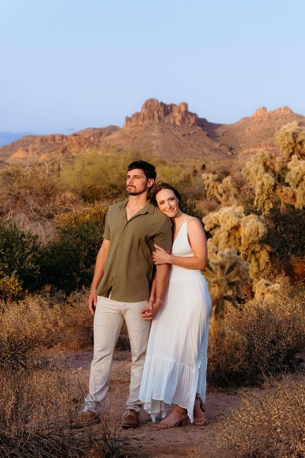
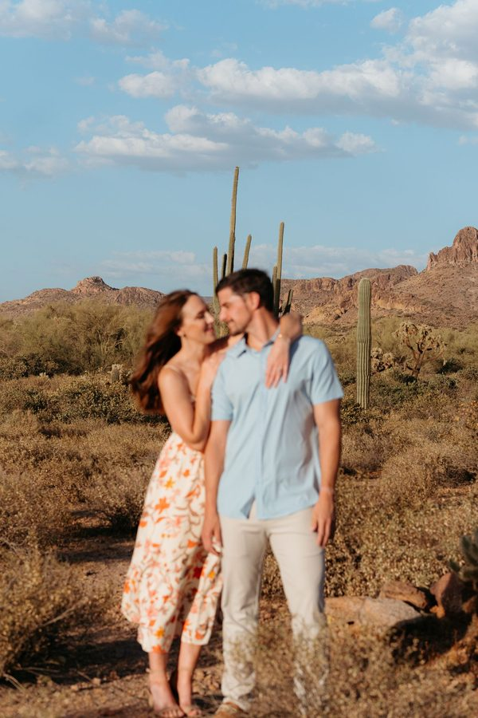
Tempe and Phoenix, any season.
Request a date